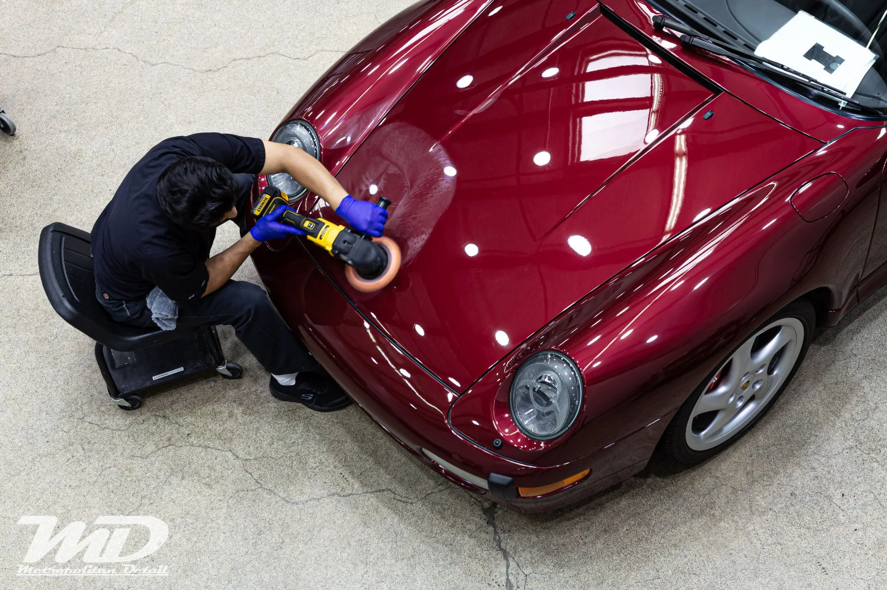

Everything on protection, coatings, tint, detailing, and how we work. Still not sure? Call us or send a quick message.
Straight answers on protection, coatings, tint, correction, and how we work.
Our STEK DYNOshield installations are backed by a 10 year warranty. With normal care the film holds its clarity and gloss for years, and it stays hydrophobic without any extra sealants.
No. Older films from decades ago yellowed and looked cloudy. DYNOshield is built for clarity and stain resistance, so it holds your paint’s original color.
Light swirls and wash marks heal on their own as the topcoat reflows, and heat speeds it up, so parking in the sun does the work. It will not heal a puncture from a rock strike.
A thermoplastic polyurethane layer applied over your paint. It absorbs impact from rock chips and road debris so your finish does not take the hit.
New cars are painted with water borne paint, which is more delicate than paint from decades ago. The most clearcoat your car will ever have is the day you get it. Adding film early means you are not thinning that clearcoat with repeated polishing later.
The highest impact areas are the front end, the lower rocker panels, and the rear bumper. If you want protection beyond those, a full body wrap is the way to go, and you get the self healing and easy cleaning across the whole car.
In most cases yes. Existing chips under the film can show as small bubbles, so if your car has more than a few thousand miles we will look it over first and tell you honestly whether it is a good candidate.
Yes. On original factory paint, film usually comes off without damage. Poor installs where a blade has cut into the paint are the exception, which is one reason to be careful about who installs it.
Usually not. Our prep is thorough and included, and we do not add surprise prep fees. If wet sanding or major defect removal is needed, we talk it through with you first.
A layer of ceramic nanoparticles that bonds with your clearcoat and becomes part of the surface. You get deep gloss and a hydrophobic finish that is far easier to wash, and it lasts much longer than wax or a sealant.
No. A coating is a repellent, not a barrier. It is not thick enough to stop road debris. For that you want paint protection film. The two work well together.
A two bucket hand wash with a detergent made for coated cars. Avoid wash and wax products, which clog the coating and kill the beading. A chemical decontamination two to four times a year keeps it performing.
Almost anywhere on the car. Paint is the obvious one, but we also coat plastic trim so it does not fade, wheels and calipers with a high temp coating, and glass with a hydrophobic coating that noticeably improves visibility in the rain.
Not much. That number comes from a pencil hardness test that has little to do with how a coating performs on a car. Judge a coating by gloss, durability, and how it is applied.
No. We do not use metalized films. Those are a cheap route to decent numbers and they interfere with signal. Ours do not.
Washington regulates how dark front windows can be. We will walk you through shades that look right and stay compliant.
STEK NEX is the best heat rejecting film we have found, and it carries a Skin Cancer Foundation recommendation. STEK Action balances performance and value with a carbon look.
Yes. Tint is a wet application, so small pockets of moisture can appear for a few days afterward. They evaporate on their own. Keep the windows up for five days so the film cures properly.
Multiple stages of machine polishing that remove defects, scratches, and stains from the clearcoat. No fillers, which just hide defects until the next wash. We cut, then polish the car twice more, so the finish is actually corrected rather than covered up.
No. Correction refines the paint that is already there. It does not add paint. Touch up work is a separate service.
More often than you would think. A new car is handled by many people, shipped, inspected, test driven, and washed before you see it. Wash swirls and factory defects are common by the time it reaches you.
It is normal, especially on low volume cars, where more of the painting is done by hand. It is expected that these cars need tidying up, and it is very fixable.
Not in trained hands. A rotary can produce a deeper shine than a random orbital and it is more precise in tight areas, but it takes skill. Our correction training is thorough for exactly that reason.
Because it produces better results. Lifting lets us properly clean tar and grime from the lower panels and see defects at eye level. The bottom half of your car gets the same quality as the top.
Usually. Oxidized paint needs full correction rather than a light polish, or you end up with a blotchy finish. Single stage lacquer paint can almost always be brought back.
Correction first is the right order. A coating locks in whatever is underneath it, so any swirls left behind stay there. After correction, the paint is ready for protection.
It depends on the size of the car and the condition of the paint. Multi stage correction is a multi day job in most cases. We give you a timeline once we have seen the car.
Yes. We work by appointment so every car gets the time it needs. Book online or call (425) 233-6068.
Yes. We keep a small fleet of free loaner cars, based on availability. Drop off, take a loaner, and keep your day moving.
It depends on the service. Many jobs are one day. Paint correction and ceramic coating usually take longer, and a full body wrap can take several days. We give you a timeline before we start.
Usually within one business day.
Pricing depends on the vehicle, its condition, and the coverage you want, so we quote each car individually rather than posting flat prices. Send us your details and we will come back with real numbers. Get a Quote →
Yes. On full body wraps and longer jobs, the loaner stays with you until your car is ready, based on availability.
PPF is a physical barrier against chips. A ceramic coating is a chemical layer for gloss and easy cleaning. Paint correction removes existing swirls. Most new cars get correction first, then film and a coating on top. Tell us your goals and we will map it out.
Not to get started. For some work we want to see it in person before finalizing, and we will tell you if that is the case.
Yes. PPF installations carry a 10 year warranty. We are a STEK Black Label shop and a CarPro CQuartz Reserve installer, and we are licensed and insured.
8539 152nd Ave NE, Redmond, WA 98052. Open Monday to Friday, 8:00 AM to 5:00 PM.
We are in Redmond and we work with drivers across Bellevue, Kirkland, Seattle, and the wider Eastside.
Yes, at our separate location, Metropolitan Detail Express, inside the Redmond Town Center parking garage. Book online and we take care of the wash while you shop.
16501 NE 76th St, Redmond, at the north entrance of the Redmond Town Center parking garage off NE 76th St. Open Monday to Friday, 8:00 AM to 5:00 PM.
Contact us to discuss options for your vehicle.
No. We are closed Saturday and Sunday. Both locations run Monday to Friday, 8:00 AM to 5:00 PM.
For a full detail or install, no, these take hours or days, which is what the loaner car is for. At MD Express the hand wash is a waiter service, so you can shop at Redmond Town Center while we work.
Since 2006. This year marks our 20th anniversary on the Eastside.
Yes. Pull into the shop at 8539 152nd Ave NE and we will take it from there.